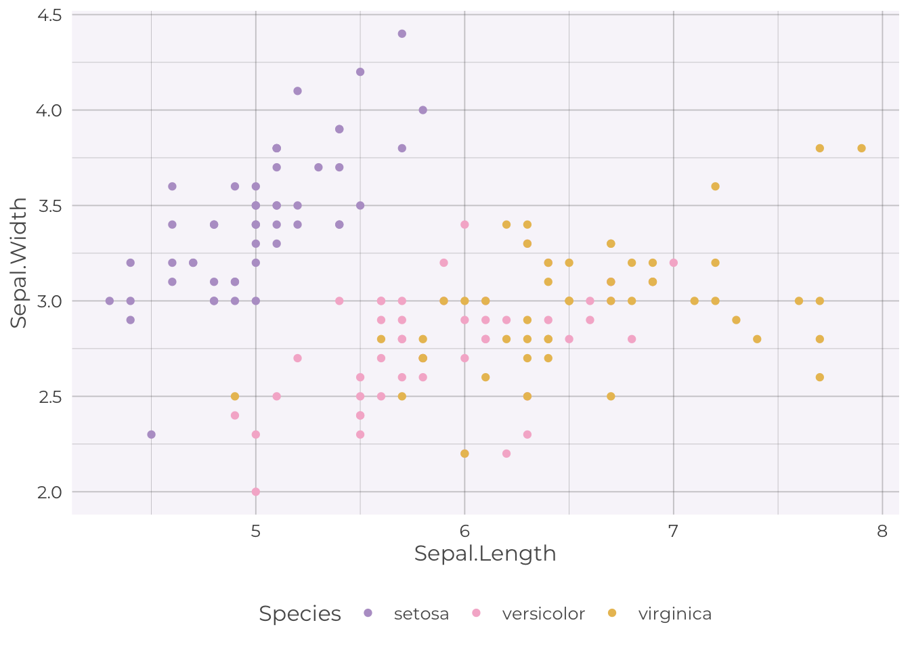

library(ggplot2)
source("../../themes/improper-prior-ggtheme.R")
iris |>
ggplot(aes(Sepal.Length, Sepal.Width, color = Species)) +
geom_point() +
scale_color_ip() +
theme_ip()
ggplot2 and ObservableBen Ewing
August 14, 2022
When Quarto was formally released earlier this year, I knew it’d only be a matter of time until I felt the incessant need to transition my oft-neglected blog to this new framework.
And so I have! While the migration itself was straightforward, I struggled to commit to a single color theme. This was compounded by my preference for using a consistent color theme across the website and any blog post plots, meaning that any change in website theme would require a change to each post. Ideally, I would be able to change both the blog color theme and plot theming across all blog posts with a single switch.
After some tinkering, I came up with the following solution:
jinjar compatible template files for ggplot2 and Quarto; I don’t use a template file for Observable, instead colors are saved in a simple .json file._quarto.yml to run the theme build script every time the website is rendered.Now any time I want to try a new theme, I just need to drop it into a .csv file, and make a small change to my theme building script! As a bonus, I also wrote a small script that takes the built ggplot2 template and creates a new themed favicon.
I’d love to hear any suggested improvements, feel free to tweet me!
Here are some examples showing consistency across each tool.
Themed badges.
Primary Secondary Success Danger Warning Info Light Dark
ggplot2A simple iris plot.
Pass the iris data to Observable.
Create a similar plot in Observable.
import {Plot} from "@observablehq/plot"
theme_obj = await
FileAttachment("../../themes/improper-prior-observable.json").json()
theme = theme_obj.scheme
Plot.plot({
color: {
legend: true,
range: theme
},
marks: [
Plot.dot(transpose(iris), {x: "Sepal.Length", y: "Sepal.Width",
stroke: "Species"}),
]
})